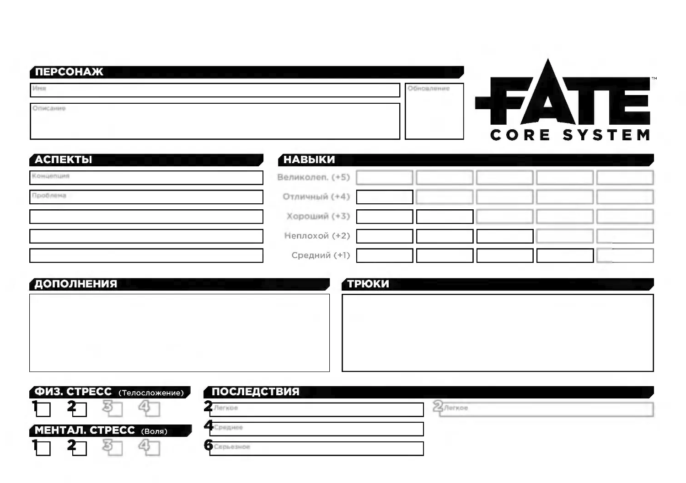

Лист — не экзамен и не таблица бонусов. Это краткая запись о человеке: что его держит, чего он хочет, что умеет и чем отличается от остальных. Начни с характера, а не с цифр.
Пять аспектов
Концепция — кто ты одной фразой. Проблема — что тянет тебя вниз. Связь — с кем или чем ты связан. И два свободных аспекта — привычки, репутация, таланты, страхи.
Хороший аспект можно призвать за себя и обратить против себя.
V15
Лист персонажа
Что где на листе и что вписывать. Наведи на номер — появится описание. Кнопка убирает подсветку и оставляет чистый лист.
наведи на номер или коснись его на телефоне

1Имя и описаниеКто ты и как выглядишь. Частая ошибка: биография на полстраницы вместо пары штрихов.
7RefreshСколько жетонов в начале сессии (обычно 3). Частая ошибка: потратить refresh на трюки и остаться без жетонов.
2Концепция, проблема, аспектыПять аспектов: концепция, проблема, связь и два свободных. Частая ошибка: аспекты-«ни о чём», которые не за что зацепить.
3НавыкиПирамида 1/2/3/4, 10 слотов. Частая ошибка: брать +5 на старте — его нет.
4ТрюкиТри бесплатных; каждый следующий −1 refresh. Частая ошибка: трюк, который просто даёт +2 без условия.
5СтрессКлетки 1/2/3 (четвёртая — при высоком Телосложении или Воле). Частая ошибка: считать стресс хитами.
6ПоследствияЛёгкое 2, среднее 4, тяжёлое 6. Это аспекты. Частая ошибка: забывать, что они работают против тебя.
На старте максимум +4. Ряд +5 на листе — задел на развитие, а не стартовая характеристика: мы работаем с пирамидой 1/2/3/4.
V17
Создание персонажа
Шесть шагов от концепции до refresh. У каждого шага — пример Ворона и подпись «что записать на лист».
1
Концепция
Кто ты одной фразой.
Ворон: вор с принципами, который ищет информацию. Записать: «Вор с принципами».
2
Проблема
Что тебя тянет вниз и создаёт неприятности.
Ворон: не доверяет тем, кто помогает. Записать: «Не доверяет тем, кто помогает».
3
Связь
С кем ты связан и почему это важно.
Ворон: должен старому должнику. Записать: «Должен старому должнику».
4
Два свободных аспекта
Чем ещё ты интересен: привычки, репутация, таланты.
Ворон: «Три пера» — мой второй дом; «Язык без костей». Записать: два аспекта.